Eine Seite. Fünf Helden.
Karoo Fun belegt eine komplette Fahrtseite. Oben vier Werte, unten dein Höhenprofil. Keine strengen Kästchen, sondern handgezeichnete Linien, Punktraster und weiße Zahlen mit dicker Kontur, die man auch in der prallen Sonne liest.
Tempo
Grün, wenn du schneller als dein Schnitt bist, rot, wenn nicht. Darunter groß dein Ø. Schneller? Ein Hase galoppiert mit. Langsamer? Eine dicke Schnecke kriecht.
Temperatur
Mit einer Nachkommastelle. Unter 0 °C friert die Kachel ein, über 25 °C wird sie zum Glutofen. Dazu der echte Himmel über dir: Sonne, Abendrot, Mond, Wolken, Regen und ein Windsack.
Puls
Die Kachel färbt sich nach deiner Pulszone. Das Herz schlägt mit, ab Zone 4 richtig heftig. Die Zonen stellst du selbst ein.
Distanz
In km mit zwei Nachkommastellen. Ein kleines Rad rollt Richtung nächsten Kilometerstein, die Straße zieht vorbei.
Höhenprofil
Das gefahrene Profil wächst live mit, eingefärbt nach Steigung. Dazu groß Höhe, Anstieg und die aktuelle Steigung. Am Gipfel flattert eine Fahne, und dein Rad sitzt am Hang, bergauf mit Schweißtropfen, bergab mit Fahrtwind.
Brrr! Herrlich! Puh, heiß!
Jede Sekunde bewegt sich etwas: Flocken fallen, Eiszapfen tropfen, Flammen flackern, die Sonne dreht sich. Die Zahlen selbst bleiben stehen, damit du sie auch auf Schotter lesen kannst. Und oben im Tempo-Feld: Hase, wenn du über deinem Schnitt fährst, Schnecke, wenn nicht.
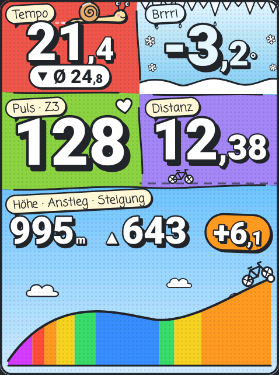
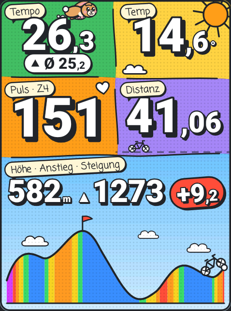
Der Himmel über dir. Echt jetzt.
Aus deiner GPS-Position und der Uhrzeit rechnet Karoo Fun aus, wo die Sonne steht. Mittags knallt sie, am Abend geht sie rot hinter Hügeln unter, nachts gibt es Sterne und den Mond in seiner echten Phase. Das klappt auch ganz ohne Handy.
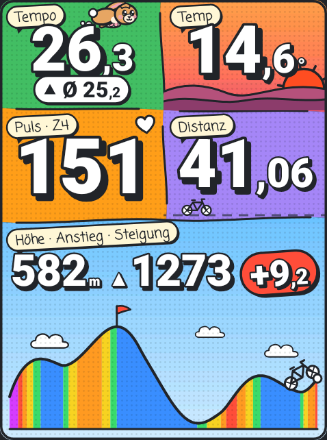
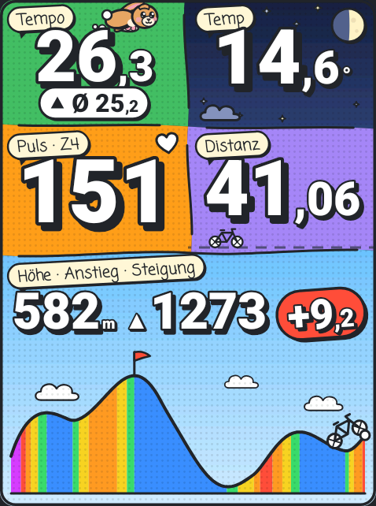
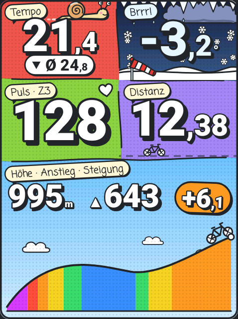
Ist dein Handy per Companion-App verbunden, kommt alle 15 Minuten das aktuelle Wetter dazu: Wolken schieben sich vor die Sonne, Regen prasselt, bei Gewitter blitzt es. Der rot-weiße Windsack zeigt, wie stark es bläst, und dank GPS-Fahrtrichtung auch, ob du Rücken-, Gegen- oder Seitenwind hast.
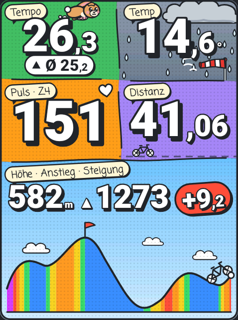
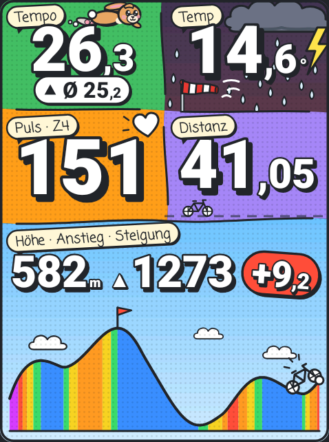
Wird's nass? Ein Blick genügt.
Das Regenradar ist eine eigene Kachel, die du auf jede Fahrtseite legen kannst. Es zeigt das Radar vom Deutschen Wetterdienst in den bekannten DWD-Farben auf einer grauen Deutschlandkarte, mit dir als Punkt in der Mitte.
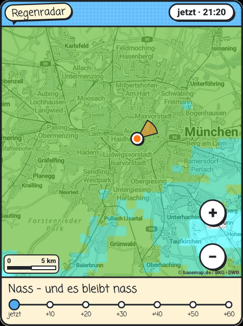
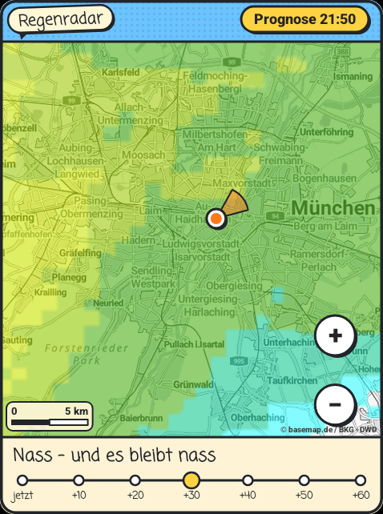
So funktioniert's
- Zoom mit den großen + und − Knöpfen: 10, 25 oder 50 km. Der Maßstab unten links passt sich an.
- Prognose für die nächste Stunde in 5-Minuten-Schritten, als Animation.
- Tipp auf die Zeitleiste schaltet ein Bild weiter. Nach 20 Sekunden läuft die Animation wieder.
- Ansage genau für deinen Standort, z. B. „Noch trocken · Regen ab ca. 15:40“.
- Lädt im Hintergrund alle 5 Minuten nach. Wischst du auf die Seite, ist alles schon da.
ℹ️ Radar und Karte gibt es für Deutschland und die Grenzgebiete. Die Daten kommen übers Handy (Companion-App) oder WLAN. Über Bluetooth ist das langsam: Beim Start dauert es etwa eine Minute, bis alles da ist. Mit dem Handy-Hotspot per WLAN geht es viel schneller.
Bau dir deine eigene Comic-Seite.
Jedes Feld gibt es auch einzeln. Du legst am Karoo eine Seite mit 2 × 4 Feldern an und wählst selbst, was wohin kommt. Die Felder aus dem Comic-Cockpit sind dabei, und ein paar neue dazu.
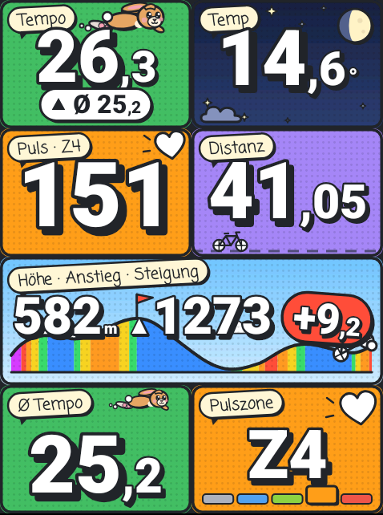
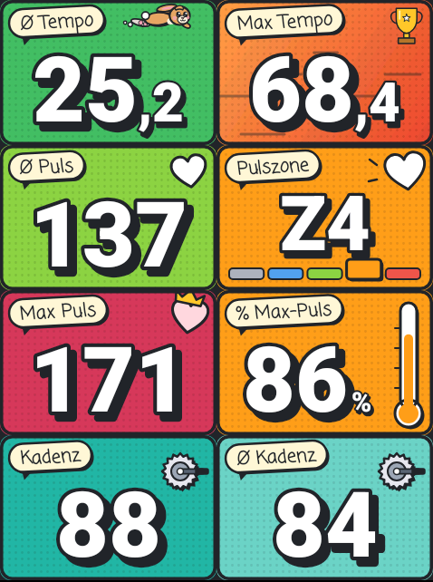
14 Felder, nach Kategorie sortiert
- Geschwindigkeit: aktuell, Ø mit Hase oder Schnecke, Max mit Pokal, der funkelt, solange du gerade so schnell bist.
- Distanz mit rollendem Rad und Höhe als Profil (am schönsten in einem breiten Feld).
- Herzfrequenz: aktuell, Ø, Zone mit Zonenleiter, Max mit Krone, % vom Max-Puls mit Thermometer.
- Trittfrequenz: aktuell, Ø und Max. Das Kettenblatt dreht mit: orange beim Mahlen, lila ab 100.
- Wetter: Temperatur unter dem echten Himmel.
ℹ️ Im Karoo stehen die Felder unter Karoo Fun, z. B. „Geschwindigkeit · Ø“ oder „Herzfrequenz · Zone“. Die Pulszonen kommen aus den Einstellungen der App, genau wie beim Comic-Cockpit.
Watt, Gang, Regen & Sonne.
13 neue Einzelfelder für deine eigenen Seiten. Manche brauchen einen Sensor, die Wetter- und Himmelsfelder laufen mit dem, was die App sowieso hat.
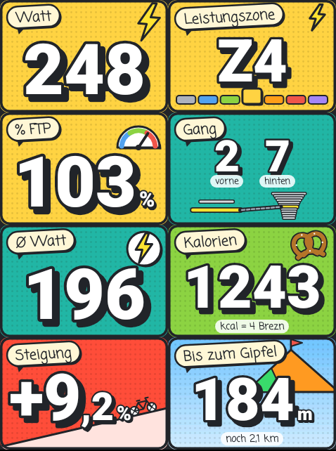
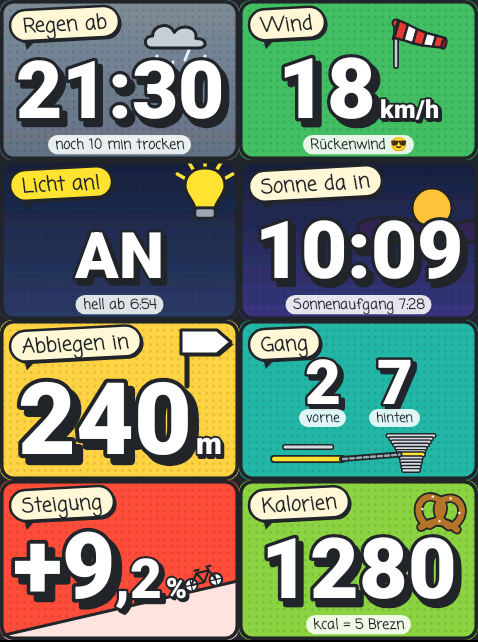
Was dazukommt
- Leistung: Watt mit Blitz, Ø, Zone mit Zonenleiter, % FTP mit Tacho (Powermeter).
- Gang: vorne und hinten, dazu der Antrieb von oben. Läuft die Kette schräg, wird's orange (Di2/AXS, bis 2 × 14).
- Steigung mit Rad auf der Rampe, Bis zum Gipfel und Abbiegen in mit Route.
- Regen ab aus dem Radar, Wind mit Windsack, Licht an in und Sonne weg in.
- Kalorien in Brezn umgerechnet. 🥨
Felder mit Humor.
Die Einzelfelder machen jetzt Witze. Die Zahl bleibt groß und lesbar, die Sprüche wechseln sich alle paar Sekunden mit dem Feldnamen ab.
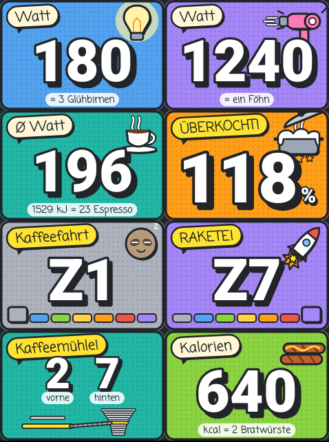
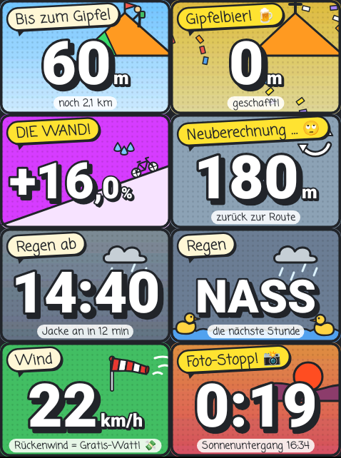
Was dazukommt
- Watt als Haushaltsgerät: Glühbirnen, Standmixer, Toaster, Föhn, Wasserkocher. Ø Watt in Espresso umgerechnet. ☕
- Leistungszone mit Charakter, vom Faultier bis zur Rakete. % FTP als Kochtopf, der ab 110 % überkocht.
- Gang: „Kaffeemühle!“, „Traktor!“, „KRRRK!“ und nach 20 min „Schon mal geschaltet?“
- Kalorien in Brezn, Bratwurst, Pizza, Döner und Weißbier. Steigung mit Schweiß und „DIE WAND!“.
- Bis zum Gipfel mit Bergsteiger und Gipfelbier. Abbiegen mit „Neuberechnung …“ neben der Route.
- Regen mit Jacken-Countdown und Gummienten, Wind mit Gratis-Watt und Föhnfrisur, Sonne mit Foto-Stopp.
- Regenradar in 5-Minuten-Schritten, mit runden Regengebieten und einer Ansage dort, wo du gleich fährst.
Wenn's knallt, dann richtig.
Sechs Momente übernehmen für bis zu 3 Sekunden den ganzen Bildschirm, mit 5 Bildern pro Sekunde. Unten bleibt eine feste, ruhige Kachel mit deinen Werten stehen, damit du auch dann alles lesen kannst.
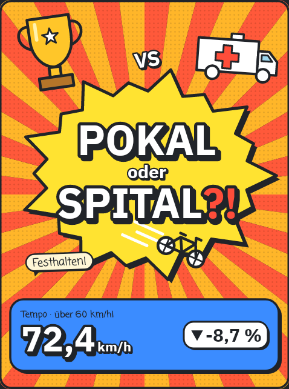
🏆 Pokal oder Spital?!
Pokal gegen Krankenwagen, Blaulicht inklusive. Dein Rad schießt den Hang hinunter, eine Sprechblase ruft „Festhalten!“ oder „Finger an die Bremse!“.
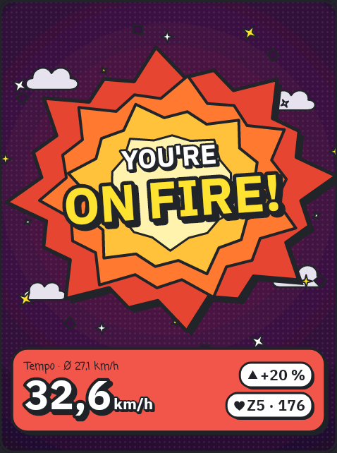
🔥 You're on fire!
Ein Feuerball zündet, ein greller Blitz, dann füllt eine Comic-Explosion die Seite. Funken fliegen, Rauch quillt, und mittendrin leuchtet „YOU'RE ON FIRE!“.
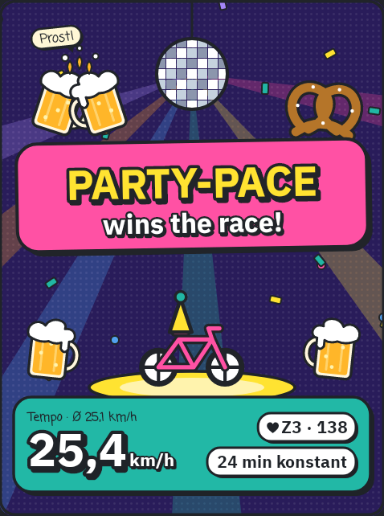
🍺 Party-Pace wins the race!
Die Discokugel fällt herein, Scheinwerfer kreisen, Konfetti rieselt, Maßkrüge stoßen an. „Prost!“ Dein Rad tanzt mit Partyhütchen auf der Bühne.
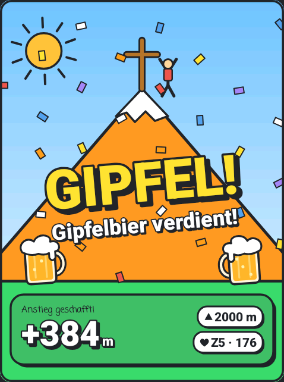
🏔 Gipfel!
Gipfelkreuz, Konfetti und ein jubelndes Männchen, zwei Maßkrüge stoßen an: „Gipfelbier verdient!“ Unten stehen die Höhenmeter des Anstiegs.
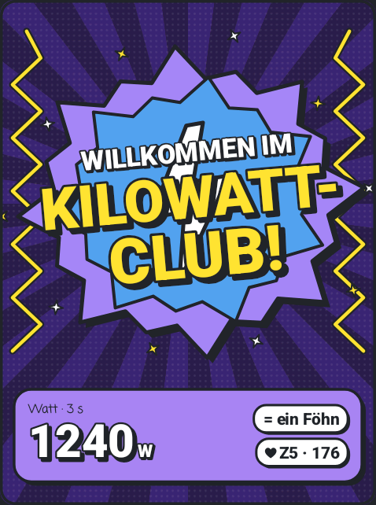
⚡ Kilowatt-Club
Blitze zucken an den Rändern, ein Riesenblitz leuchtet: „Willkommen im Kilowatt-Club!“ Unten deine Spitzenleistung und welches Haushaltsgerät du gerade antreibst.
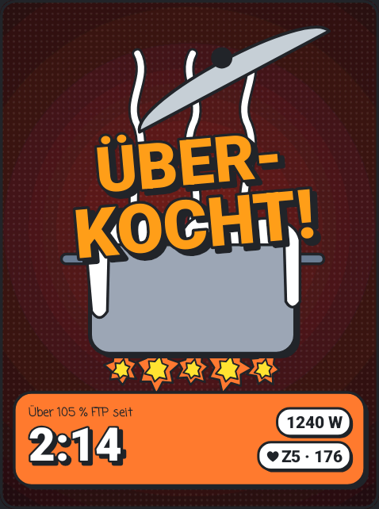
🍲 Überkocht
Der Deckel fliegt, Dampf steigt auf, Schaum läuft über den Rand. Unten steht, wie lange du schon über der Schwelle bist.
Du bestimmst, wann's kracht.
Die Einstellungen öffnest du direkt am Karoo unter Einstellungen › Apps › Karoo Fun › Öffnen. Jede Änderung gilt sofort.
- Eigene Pulszonen aus deinem Max-Puls, jede Grenze einzeln anpassbar, oder die Zonen aus dem Karoo-Profil
- Pause für alle Aktionen: höchstens alle 25 min eine (einstellbar), damit's besonders bleibt
- Dauer der Aktionen: 1 bis 3 Sekunden
- Jede Aktion einzeln an/aus, mit eigenen Schwellen für Tempo, Gefälle, Pulszone, Zeit, Watt, % FTP und Höhenmeter
- Vorschau-Knopf, um jede Aktion zu Hause anzuschauen
- Sprache: Deutsch, Englisch oder automatisch wie der Karoo
- Schaltung: wie viele Kettenblätter und Ritzel das Gang-Feld zeichnet, bis 2 × 14
- Versionsnummer oben rechts, damit du siehst, welche Version auf deinem Karoo läuft
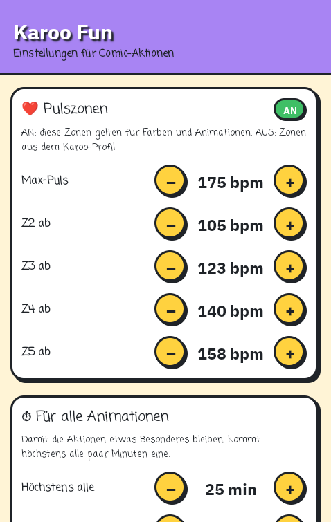
Viel Show, wenig Strom.
pro Sekunde wird die Seite neu gezeichnet. So oft kommen die Messwerte ohnehin.
dauert eine Comic-Aktion höchstens. Die Bilder blättert der Karoo selbst durch, die App muss nichts nachschieben.
Pause zwischen den Aktionen. Display und GPS bleiben die großen Verbraucher.
alle 5 Minuten fürs Radar, ein paar hundert Byte alle 15 Minuten fürs Wetter. Karten bleiben auf dem Karoo gespeichert.
In 4 Schritten zum Comic-Cockpit
- App auf den Karoo 3 spielen. Wie das geht, steht Schritt für Schritt unten, auch wenn du so etwas noch nie gemacht hast.
- Am Karoo eine Fahrtseite mit einem Datenfeld anlegen und dort Karoo Fun › Comic-Cockpit wählen. Lust auf Radar? Noch eine Seite mit Karoo Fun › Regenradar. Oder bau dir eine eigene Seite aus den Einzelfeldern.
- Unter Einstellungen › Apps › Karoo Fun › Öffnen deinen Max-Puls und die Aktionen einstellen.
- Tipp: Unter Einstellungen › Tastensymbole die Tastenknöpfe ausschalten, dann hat der Comic noch mehr Platz.
Keine Ahnung von Technik? Kein Problem!
Karoo Fun gibt es (noch) nicht im Karoo-App-Store. Du spielst die App deshalb einmalig per USB-Kabel vom Computer auf deinen Karoo. Das dauert beim ersten Mal ungefähr 15 Minuten, und du kannst nichts kaputt machen. Nimm dir einen Kaffee und mach einfach Schritt für Schritt mit.
Das brauchst du
- Deinen Hammerhead Karoo 3, geladen
- Einen Computer mit Windows oder macOS
- Ein USB-C-Kabel, das Daten kann. Am besten das Kabel, das beim Karoo dabei war. Manche billigen Kabel können nur laden, damit klappt es nicht.
- Die Datei karoo-fun-1.5.1.apk, das ist die App selbst. Du lädst sie auf github.com/HannoP1983/karooFun › Releases unter „Assets“ herunter. Gibt es schon eine neuere Version, steht dort eine höhere Nummer, dann diese Nummer auch in den Befehlen unten verwenden.
Am Karoo die „Entwickleroptionen“ freischalten
Das ist ein versteckter Menüpunkt. Keine Sorge, du wirst dadurch nicht zum Hacker, und der Karoo funktioniert ganz normal weiter.
- Am Karoo Einstellungen öffnen und ganz nach unten scrollen.
- Auf Über tippen.
- Den Eintrag mit der Build-Nummer suchen und 7 Mal schnell hintereinander darauf tippen.
- Es erscheint ein Hinweis wie Sie sind jetzt Entwickler. Fertig!
Steht in den Einstellungen unten schon Developer Options? Dann ist dieser Schritt bereits erledigt.
USB-Debugging einschalten
Damit erlaubst du dem Computer, eine App auf den Karoo zu spielen.
- Zurück in die Einstellungen, wieder ganz nach unten.
- Auf Developer Options (Entwickleroptionen) tippen.
- Den Schalter bei USB-Debugging einschalten und die Rückfrage mit OK bestätigen.
Das Programm „adb“ auf den Computer holen
adb ist ein kleines, kostenloses Werkzeug von Google, mit dem der Computer mit Android-Geräten spricht. Der Karoo ist innen ein Android-Gerät.
🪟 Windows
- Im Browser die Google-Seite „SDK Platform-Tools“ öffnen:
developer.android.com/tools/releases/platform-tools - Auf „Download SDK Platform-Tools for Windows“ klicken, den Bedingungen zustimmen, herunterladen.
- Die ZIP-Datei im Download-Ordner mit Rechtsklick › Alle extrahieren… entpacken.
- Jetzt gibt es einen Ordner platform-tools. Den brauchen wir gleich wieder.
🍎 Mac
- Im Browser die Google-Seite „SDK Platform-Tools“ öffnen:
developer.android.com/tools/releases/platform-tools - Auf „Download SDK Platform-Tools for Mac“ klicken, zustimmen, herunterladen.
- Die ZIP-Datei im Ordner Downloads doppelklicken. Sie entpackt sich von selbst.
- Jetzt gibt es im Ordner Downloads einen Ordner platform-tools.
Trick, der alles einfacher macht: Kopiere die Datei karoo-fun-1.5.1.apk in genau diesen Ordner platform-tools. Dann liegt alles an einem Ort.
Das Befehlsfenster im richtigen Ordner öffnen
Jetzt kommt der Teil, der nach Hacker aussieht. Ist er aber nicht: Du tippst nur zwei Zeilen ab.
🪟 Windows
- Den Ordner platform-tools im Explorer öffnen.
- Oben in die Adresszeile klicken (dort, wo der Pfad steht).
- cmd eintippen und Enter drücken.
- Ein schwarzes Fenster geht auf. Das ist die „Eingabeaufforderung“.
🍎 Mac
- Das Programm Terminal öffnen (Cmd + Leertaste drücken, „Terminal“ tippen, Enter).
- Diese Zeile eintippen und Enter drücken:
cd ~/Downloads/platform-tools
Karoo anschließen und Erlaubnis geben
- Den Karoo einschalten und mit dem USB-Kabel an den Computer stecken.
- Im schwarzen Fenster diese Zeile eintippen und Enter drücken:
🪟 Windows
adb devices
🍎 Mac
./adb devices
- Auf dem Karoo erscheint jetzt die Frage USB-Debugging zulassen?
Haken bei „Von diesem Computer immer zulassen“ setzen und OK tippen. - Den Befehl von eben noch einmal eintippen. Jetzt steht da eine lange Nummer und dahinter das Wort device. 🎉
Steht da unauthorized? Dann hast du die Frage auf dem Karoo noch nicht mit OK bestätigt. Steht da gar nichts? Schau unten bei „Hilfe, es klappt nicht“.
Die App installieren
Diese Zeile eintippen und Enter drücken:
🪟 Windows
adb install -r karoo-fun-1.5.1.apk
🍎 Mac
./adb install -r karoo-fun-1.5.1.apk
Nach ein paar Sekunden erscheint das Wort Success. Das war's, die App ist drauf! 🥳
Später eine neue Version bekommen? Genau dieselbe Zeile noch einmal, mit der neuen Datei. Deine Einstellungen bleiben erhalten.
Hattest du Karoo Fun schon vor Version 1.1 drauf und es kommt INSTALL_FAILED_UPDATE_INCOMPATIBLE? Die alte Version wurde anders signiert. Einmal deinstallieren (siehe „Hilfe, es klappt nicht“), dann klappt es. Die Einstellungen musst du danach neu eintragen.
Das Comic-Cockpit auf eine Fahrtseite legen
- Kabel abziehen.
- Am Karoo in deinem Fahrprofil die Seiten öffnen und eine neue Seite hinzufügen (oder eine vorhandene bearbeiten).
- Als Aufteilung die Variante mit nur einem einzigen Feld wählen. Das Cockpit braucht die ganze Seite.
- Auf das Feld tippen und in der Liste Karoo Fun › Comic-Cockpit auswählen.
- Für das Regenradar genauso eine weitere Seite anlegen und Karoo Fun › Regenradar wählen. Am schönsten ebenfalls als einziges Feld.
- Eigene Seite aus Einzelfeldern: Aufteilung mit 2 × 4 Feldern wählen und jedes Feld einzeln belegen, z. B. Karoo Fun › Geschwindigkeit · Ø oder Karoo Fun › Herzfrequenz · Zone.
- Speichern, Fahrt starten, Spaß haben. Zack! 💥
Einstellen und letzte Tipps
- Einstellungen der App: Am Karoo Einstellungen › Apps › Karoo Fun › Öffnen. Dort als Erstes deinen Max-Puls eintragen. Gehalten gedrückt zählen + und – schnell weiter. Mit der Zurück-Taste unten links am Karoo kommst du wieder raus.
- Wetter und Radar: Brauchen eine Verbindung, also die Hammerhead-Companion-App auf dem Handy (Bluetooth an) oder WLAN am Karoo.
- Welche Version? Steht in den Einstellungen der App oben rechts.
- Mehr Platz: Unter Einstellungen › Tastensymbole die Tastenknöpfe ausschalten. Dann verschwindet die graue Leiste am unteren Rand.
- USB-Debugging wieder aus? Kannst du nach der Installation in den Developer Options ausschalten. Für spätere Updates einfach wieder einschalten.
- App wieder loswerden: Einstellungen › Apps › Karoo Fun › Deinstallieren.
🆘 Hilfe, es klappt nicht
„adb“ wird nicht gefunden / „command not found“ / „ist nicht als Befehl erkannt“
Das schwarze Fenster ist im falschen Ordner. Schritt 4 noch einmal machen. Unter Windows in PowerShell statt cmd muss es .\adb devices heißen.
Bei adb devices erscheint kein Gerät
Fast immer liegt es am Kabel: anderes Kabel probieren, am besten das Original. Anderen USB-Anschluss am Computer nehmen.
Prüfen, ob USB-Debugging (Schritt 2) wirklich an ist. Karoo einmal ab- und wieder anstecken.
„unauthorized“
Auf dem Karoo die Frage „USB-Debugging zulassen?“ mit OK bestätigen. Kam keine Frage? Kabel ab- und wieder anstecken.
„INSTALL_FAILED_UPDATE_INCOMPATIBLE“
Es ist schon eine anders signierte Version drauf. Erst entfernen mit adb uninstall de.karoofun.karoo (Mac: ./adb …), dann Schritt 6 wiederholen.
Mac meldet, das Programm sei von einem „nicht verifizierten Entwickler“
In Systemeinstellungen › Datenschutz & Sicherheit ganz unten bei adb auf Trotzdem erlauben klicken und den Befehl noch einmal eintippen.